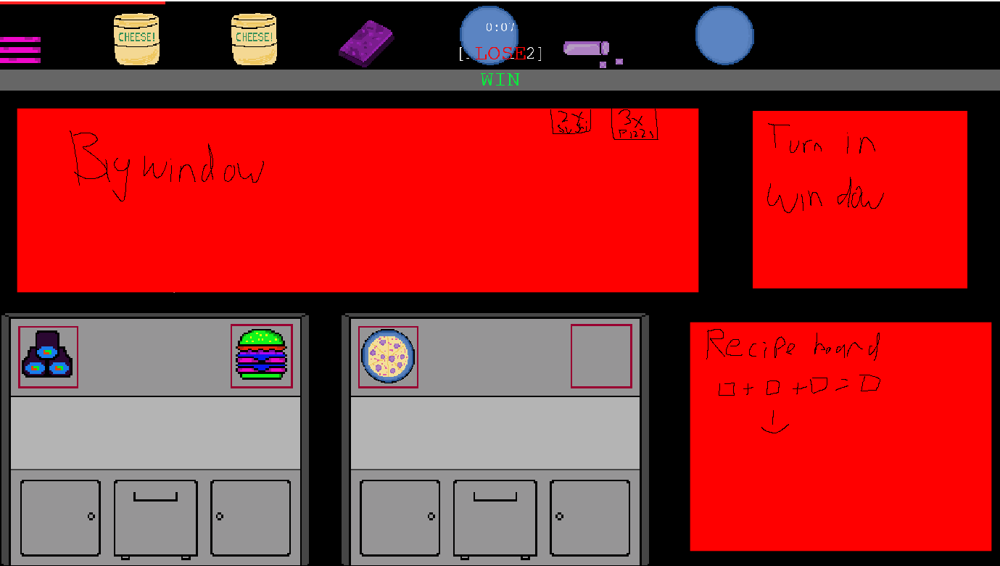
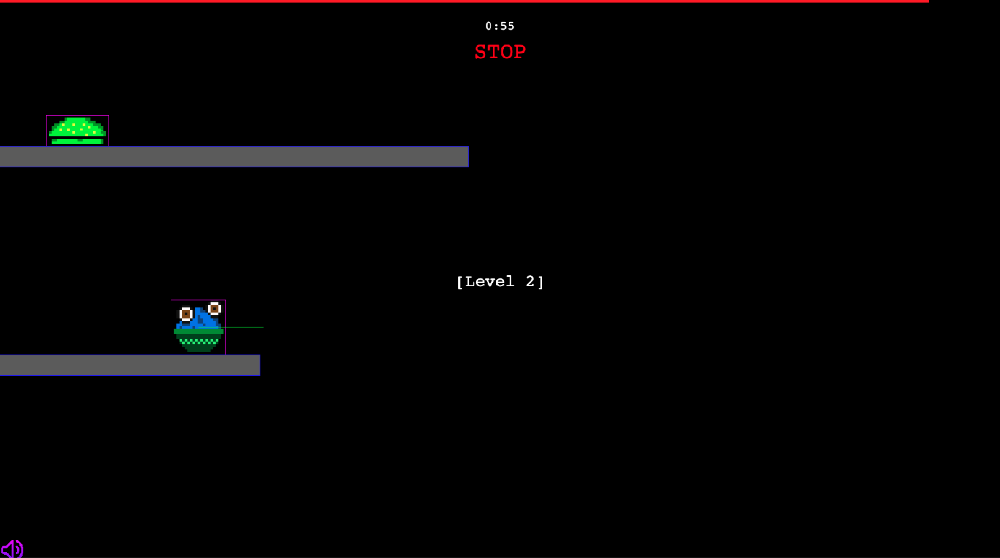

Galaxy Grub
A futuristic sci-fi cooking game
- Genre
- Futuristic, sci-fi mobile game
- Tools
- Phaser, Procreate, pixilart.com, Piskel, Microsoft Paint
- Team
- 5-person project (with Jason Garabedian, Jenny Wong, Jose Baeza, Alexander Flores)
- Role
- Production Lead, Artist, Programmer
overview
Galaxy Grub combines time-management gameplay with a fast-paced ingredient collection and crafting system. Players must keep track of incoming ingredients and fulfill recipes while working against a limited amount of time.
The game was designed around a gradual difficulty increase, it starts with simpler recipes before introducing additional ingredients and more demanding combinations. Beyond the core gameplay, we wanted to create an immersive experience through the pixel art, interactive menus, and audio that responds to the remaining time in each level.
gameplay video
design process
1. Prototype/Initial Ideas
We initially envisioned Galaxy Grub as a fast-paced cooking game inspired by Overcooked, but with a futuristic setting and mobile-friendly drag-and-drop mechanics. Our original concept revolved around each level having multiple conveyor belts that carried ingredients players would collect and combine to fulfill recipes. The conveyor belt idea was inspired by “I Love Lucy: Chocolate Factory.”

Our first prototype focused on implementing the main gameplay loop: moving ingredients along conveyor belts, dragging ingredients into crafting areas, and producing completed dishes once the required ingredients were combined.
The prototype only showcased placeholder assets and used built-in buttons to simulate the scene flow of the game. This allowed us to test the core mechanics without needing fully developed scenes and assets. Using the prototype as a starting point, the game could build on additional recipes, level progression, and UI elements.
3. Playtesting & changes
Through development we worked to refine the gameplay and user interface through playtesting and asset creation.
- Narrowed down conveyer belts to just one that changed speed at each level with an ingredient randomization system.
- Organized UI layout to make gameplay elements recognizable and intuitive.
- Worked towards consistent pixel art-style.
- Developed difficulty progression by gradually introducing new recipes, ingredients, and combinations

what i did
- Developed core gameplay mechanics in Phaser 4, including the drag-and-drop ingredient system, crafting interactions, and dish production.
- Implemented and designed game menus, navigation buttons, level transitions, full screen option, and player-facing UI elements.
- Created pixel art assets for game background (main menu, levels), ingredients, dishes (pizza, parfait), and UI elements (Music, Volume, Settings, Retry, Home, Service Bell).
- Helped organize development tasks, coordinate team progress, and maintain consistency across gameplay features and visual design as Production Lead.
what i learned
- Connecting different parts of a game, such as conveyor belts, drag-and-drop mechanics, crafting, and level progression, so they all work together.
- As Production Lead, I gained experience coordinating tasks, communicating with teammates, and keeping development organized. I learned how important it is to establish clear responsibilities and maintain communication when multiple people are working on the same project.
- I gained a better understanding of how to organize code using reusable components and separate Phaser scenes.
- I developed a deeper understanding of how players will respond to a game without developer knowledge. This made me think more about how to create a design that players can understand easily and enjoy.